Aktuálna téma
Cirkevné stavby
7. 3. 2024 | RTVS: 2


Počas existencie KVARTETA bolo odvysielaných takmer 230 premiérových častí. Približne 900 reportáží dokázalo v každej zo 4 susediacich krajín osloviť milióny divákov. Témy zo života obyčajných ľudí, úspechy, problémy a ich riešenia, hospodárstvo, vzdelávanie, veda, kultúra, história, ekológia, šport či zaujímavé prírodné a turistické miesta majú univerzálny, nadčasový a európsky charakter.
A práve tematický potenciál dáva KVARTETU šancu uplatniť sa v budúcnosti na televíznych obrazovkách aj s týždennou periodicitou.

Perspektívu vidíme aj v podpore Medzinárodného Vyšehradského Fondu, pretože len vďaka osobným stretnutiam tvorcov sa nám darilo KVARTETO vylepšovať a občas aj zachraňovať. Mnohé z miest našich stretnutí by sme pri pracovnej vyťaženosti nemali možnosť vidieť a overiť tak na vlastnej koži ich atraktivitu aj pre diváka.

V konečnom dôsledku potvrdila opodstatnenosť tejto relácie aj samotná Vyšehradská cena udeľovaná ministrami kultúry krajín V4. Televízny program všetkých štyroch krajín bol ocenený po prvýkrát.
Štyri rôzne ľubozvučné jazyky v tomto KVARTETE ladia dokonale a snáď ešte dlho budú.

Ľuba Koľová
Novinárka, redaktorka spravodajstva a šéfredaktorka Redakcie dokumentárnej tvorby.
Ľuba Koľová
Novinárka, redaktorka spravodajstva a šéfredaktorka Redakcie dokumentárnej tvorby.
Ľuba Koľová
Novinárka, redaktorka spravodajstva a šéfredaktorka Redakcie dokumentárnej tvorby.
Ľuba Koľová
Novinárka, redaktorka spravodajstva a šéfredaktorka Redakcie dokumentárnej tvorby.
Ďakujeme všetkým partnerom na Slovensku, v Česku, Poľsku a Maďarsku, bez ktorých by Kvarteto nebolo také, aké je.


Za podpory